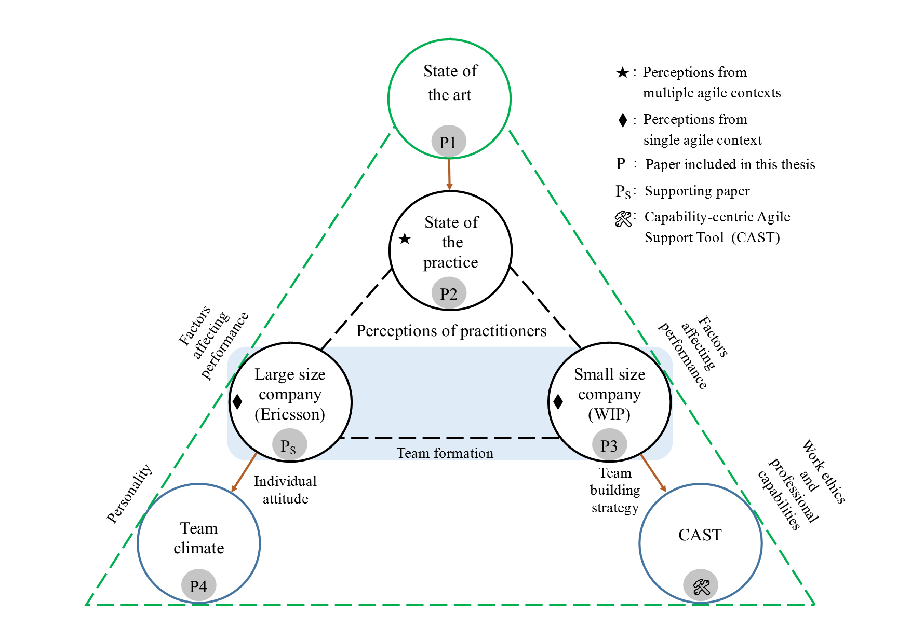

Licentiate Thesis
Which Human Aspects Matter Most? Understanding and Investigating Capabilities in Industrial Agile Contexts
Abstract
Human aspects in software development are considered as a key ingredient that ultimately gives a project team its soul. The rapid rate of adoption of Agile Software Development (ASD) methods across various organizations over the past decades, coupled with the agile manifesto’s emphasis on “individuals and interactions over processes and tools” brings about an apparent pressing need for establishing deeper insights into human aspects of software engineering.
Within the context of ASD, software professionals are expected to demonstrate experience and proficiency in various methodologies, tools and skills while undertaking diverse roles in projects. In such a development environment, a failure in assigning a suitable person to a team could ultimately lead to a decline in service quality, unattainable project deadlines and loss of credibility. Thus, ASD methodologies are largely reliant on the capabilities of professionals.
In this thesis, we identify and inspect which capability measures pertain to individuals and teams within the context of ASD and further explore which individual and team level capability measures are crucial for assembling agile teams. Multiple studies were executed in industrial contexts (in collaboration with Ericsson and Wireless Independent Provider (WIP) in Sweden) for gathering impressions of agile practitioners.
Initially, we performed a systematic literature review in order to investigate capability measurement in ASD and our findings revealed that capabilities essentially span across professional, social and innovative dimensions. Our subsequent inspection of agile practitioners’ perceptions on capability measures aided in comparing the findings from the state of the art and the state of the practice; and was also instrumental in determining the key capability measures within the context of ASD.
Our studies also targeted at analyzing the tacit knowledge of experts and that aided in understanding which capabilities are deemed relevant while configuring agile teams. Additionally, the studies also facilitated exploration of the similarities and distinctions between the team configuration perspectives of a large and small sized company. The need from both the industrial partners to configure teams by focusing on specific capability measures from the findings of the aforementioned studies (Ericsson: personality; WIP: work ethics and professional capabilities), persuaded us to investigate “team climate” and develop a capability-centric Web tool (CAST) to support managers in assembling teams.
The following figure presents an overview of the thesis
The following papers are included in this thesis and are presented in the order as listed in the figure
Paper 1:
Sai Datta Vishnubhotla, Emilia Mendes, and Lars Lundberg. 2018. An Insight into the Capabilities of Professionals and Teams in Agile Software Development: A Systematic Literature Review. In Proceedings of the 2018 7th International Conference on Software and Computer Applications (ICSCA 2018). ACM, New York, NY, USA, 10-19. DOI: 10.1145/3185089.3185096.
Abstract
Background: Previous studies investigated key characteristics of software engineers and factors influencing the performance of individuals, productivity of teams and project success within agile software development (ASD). They aided in the active investigation of human aspects in ASD. However, capability measurement and prediction with respect to agile workforce, owing to itsimportance, is an area that needsspotlight.
Objective: The objective of this paper is to present the state of the art relating to capability measurement of software engineers and teams working in ASD projects.
Method: We carried out a systematic literature review (SLR) focused on identifying attributes used for measuring and predicting the capabilities of individual software engineers and teams.
Results: Evidence from 16 studies showed attributes that can measure capabilities of engineers and teams, and also attributes that can be used as capability predictors. Further, different instruments used to measure those attributes were presented.
Conclusions: The SLR presented a wide list of attributes that were grouped into various categories. This information can be used by project managers as, for example, a checklist to consider when allocating software engineers to teams and in turn teams to a project. Further, this study indicated the necessity for an investigation into capability prediction models.
Paper 2:
Sai Datta Vishnubhotla, Emilia Mendes and Lars Lundberg. 2019. Understanding the Perceived Relevance of Capability Measures: A Survey of Agile Software Development Practitioners. Will be submitted to a journal.
Abstract
A significant number of studies reported models for competence profiling, measuring capabilities of professionals and recommendation systems for roles within agile software development (ASD). These models coordinated in human resource management within ASD. However, in the light of swift, incremental and iterative nature of ASD practices, designing solutions that easily integrate capability measurements with ongoing project management routines, is an important area for investigation. With the support of interviews, grounded theory procedure and workshops, we identified the aspects valued by our industrial collaborator while allocating professionals to tasks. This information was further utilized towards devising a framework for capability-centric Web tool. This tool provides a one-stop solution for project managers to create projects, keep track of capabilities and execute allocation routines.
Paper 3:
Sai Datta Vishnubhotla, Emilia Mendes and Lars Lundberg. 2018. Designing a CapabilityCentric Web Tool to Support Agile Team Composition and Task Allocation: A Work in Progress. In Proceedings of CHASE'18, Gothenburg, Sweden, May 27, 2018, 4 pages. DOI: 10.1145/3195836.3195855.
Abstract
A significant number of studies reported models for competence profiling, measuring capabilities of professionals and recommendation systems for roles within agile software development (ASD). These models coordinated in human resource management within ASD. However, in the light of swift, incremental and iterative nature of ASD practices, designing solutions that easily integrate capability measurements with ongoing project management routines, is an important area for investigation. With the support of interviews, grounded theory procedure and workshops, we identified the aspects valued by our industrial collaborator while allocating professionals to tasks. This information was further utilized towards devising a framework for capability-centric Web tool. This tool provides a one-stop solution for project managers to create projects, keep track of capabilities and execute allocation routines.
Paper 4:
Sai Datta Vishnubhotla, Emilia Mendes and Lars Lundberg. 2019. Investigating the relationship between personalities and team climate of software professionals in a telecom company. Submitted to Information and Software Technology.
Abstract
Context: Previous research found that the performance of a team not only depends on the team personality composition, but also on the interactive effects of team climate. Although investigation on personalities associated with software development has been an active research area over the past decades, there has been very limited research in relation to team climate.
Objective: Our study investigates the association between the five factor model personality traits (openness to experience, conscientiousness, extraversion, agreeableness and neuroticism) and the factors related to team climate (team vision, participative safety, support for innovation and task orientation) within the context of agile teams working in a telecom company.
Method: A survey was used to gather data on personality characteristics and team climate perceptions of 43 members from eight agile teams. The data was initially used for correlation analysis; then, regression models were developed for predicting the personality traits related to team climate perception.
Results: We observed a statistically significant positive correlation between agreeableness and participative safety (r = 0.37), and also between openness to experience and support for innovation (r = 0.31). Additionally, agreeableness was observed to be positively correlated with overall team climate (r = 0.35). Further, from regression models, we observed that personality traits accounted to less than 15% of the variance in team climate.
Conclusions: A person’s ability to easily get along with team members (agreeableness) has a significant positive influence on the perceived level of team climate. Results from our regression analysis suggest that further data may be needed, and/or there are other human factors, in addition to personality traits, that should also be investigated with regard to their relationship with team climate. Overall, the relationships identified in our study are likely to be applicable to organizations within the telecommunications domain that use scrum methodology for software development.
Supporting paper:
Emilia Mendes, Davi Viana, Sai Datta Vishnubhotla and Lars Lundberg. 2018. Realising Individual and Team Capability in Agile Software Development: A Qualitative Investigation. In Proceedings of 44th Euromicro Conference on Software Engineering and Advanced Applications (SEAA), 29-31 Aug. 2018: pp. 183–190. DOI: 10.1109/SEAA.2018.00037.
Abstract
Several studies have shown that both individual and team capability can affect software development performance and project success; a deeper understating of such phenomena is crucial within the context of Agile Software Development (ASD), given that its workforce is a key source of agility. This paper contributes towards such understanding by means of a case study that uses data from 14 interviews carried out at a large telecommunications company, within the context of a mobile money transfer system developed in Sweden and India, to identify individual and team capability measures used to form productive teams. Our results identified 10 individual and five team capability measures, of which, respectively, five and four have not been previously characterised by a systematic literature review (SLR) on this same topic. Such review aggregated evidence for a total of 133 individual and 28 team capability measures. Further work entails extending our findings via interviewing other software/software-intensive industries practicing ASD.